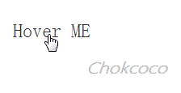
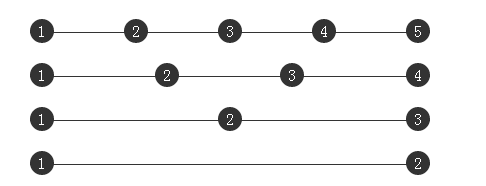

最近无论是工作还是自我学习提升都很忙，面对长篇大论的博文总是心有余而力不足，但又不断的接触学习到零碎的但是很有意义的知识点，很想分享给大家，所以本篇可能会很短。
本篇接我另一篇讲述 CSS 伪元素的文章： 【CSS进阶】伪元素的妙用–单标签之美，看完本文觉得有意思的可以再去看看上一篇，分享了一些伪元素的妙用。
正文从这里开始：
哪些标签不支持伪元素？
我也是才知道这个姿势。为了不误导读者，就赶紧补充一下。
伪元素虽然强大，但是还是有一些特定的标签是不支持伪元素 before 和 after 的。
诸如 <img\> 、 <input\>、 <iframe\>，这几个标签是不支持类似 img::before 这样使用。
究其原因，要想要标签支持伪元素，需要这个元素是要可以插入内容的，也就是说这个元素要是一个容器。而 input，img，iframe 等元素都不能包含其他元素，所以不能通过伪元素插入内容。
纯CSS实现title属性hover效果
我们都知道，在 HTML 标签中有这样一个属性 – title，该属性规定关于元素的额外信息，就是我们可以往 title 里面填入一段文字，鼠标移到元素上时就会显示这段文本。
像是这样 <element title="value" >。效果如下：
;
但是这个 hover 框有两个小问题：
响应太慢，通常鼠标 hover 上去要隔 1s 左右才会出现这个 title 框
框体结构无法自定义，弹出框的样式无法自定义
嗯，通常要解决上面的方法，或者说我们需要一个鼠标 hover 上去的时候弹出一个提示层的效果都不会采用 title 属性，而是配合使用 JS 模拟一个弹出层。
这里有一个纯 CSS 的方案可以解决这个场景，运用了伪元素，先上 Demo：
鼠标 hover 一下文字，发现弹出层响应十分迅速（因为就是 CSS hover，没有延迟）。并且这里的弹出层的样式也可以完全自定义，没有用到 JS 代码，并且查看 HTML 代码可以看到不需要多余的标签。
怎么实现的呢？主要是运用了伪元素的 content 属性， content 通常是用于在伪元素中插入内容的。而其中有一句语法 content: attr(value) 类似这样，可以读取对应 HTML 标签的 value 属性。也就是：
假设一个 HTML 标签定义为：
<div data-msg="ABC">那么该 div 对应的伪类如果设置了
content:attr(data-msg)，就可以读取到 data-msg 的值，相当于content:"ABC"
而且框体由于是伪类生成的，所以我们可以自定义它的样式及位置，运用这个效果，我们应用在可以在许多无法正常把信息展示完的地方。
借用伪元素实现多列均匀布局
我们经常需要实现多列均匀布局，能够自适应各种情况，如下：
;
在移动端我们可以使用 flex 布局，但是在 PC 端如果要兼容 IE6+ ，通常都需要一些额外的标签控制最后一个元素或者配合 JS 进行运算。
我们知道，有个 text-align:justify 可以实现两端对齐文本效果，一开始我猜测使用它可以实现：
试了一下是不行的，并没有实现所谓的两端对齐，查找原因，在 W3C 找到这样一段解释:
最后一个水平对齐属性是 justify，它会带来自己的一些问题。CSS 中没有说明如何处理连字符，因为不同的语言有不同的连字符规则。规范没有尝试去调和这样一些很可能不完备的规则，而是干脆不提这个问题。
额，我看完上面一大段解释还是没明白上面意思，再继续查证，才找到原因：
虽然 text-align:justify 属性是全兼容的，但是要使用它实现两端对齐，需要注意在模块之间添加[空格/换行符/制表符]才能起作用。
也就是说每一个 <i>1</i> 间隙，至少需要有一个空格或者换行或者制表符才行。
我尝试给每一块中间添加一个换行符，发现还是不行：
再寻找原因，是出在最后一个元素上面，然后我找到了 text-align-last 这个属性，text-align-last 属性规定如何对齐文本的最后一行，并且 text-align-last 属性只有在 text-align 属性设置为 “justify” 时才起作用。
尝试给容器添加 text-align-last:justify，发现终于可以了，多列均匀布局：
但是一看兼容性，惨不忍睹，只有 IE 和 最新的 chrome 支持 text-align-last 属性，也就是说，如果你不是在使用 IE 或者 最新版的 chrome 观看本文，上面这个 codePen 例子还是没有均匀分布。
好，铺垫了这么久，终于可以引出本文的主角伪元素了，上面说了要使用 text-align:justify 实现多列布局，要配合 text-align-last ，但是它的兼容性又不好，真的没办法了么，其实还是有的，使用伪元素，可以完美实现：
通过给伪元素 :after 设置 inline-block ，配合容器的 text-align: justify 就可以轻松实现多列均匀布局了。配合几句 hack 代码，可以实现兼容到 IE6+ ，最重要的是代码不长，很好理解。
本文主要就是多介绍了伪元素的两种实用方法，更多伪元素的妙用可以戳
CSS3奇思妙想，采用单标签完成各种图案 – Demo （请用 Chrome 浏览器打开，非常值得一看）。
我另一篇讲述 CSS 伪元素的文章： 【CSS进阶】伪元素的妙用–单标签之美，看完本文觉得有意思的可以再去看看上一篇。
也希望觉得不错的同学顺手在我的 Github 点个 star ： CSS3奇思妙想 。
希望这篇文章对大家有所帮助，尤其是在对问题解决的思维层面上。
到此本文结束，如果还有什么疑问或者建议，可以多多交流，原创文章，文笔有限，才疏学浅，文中若有不正之处，万望告知。